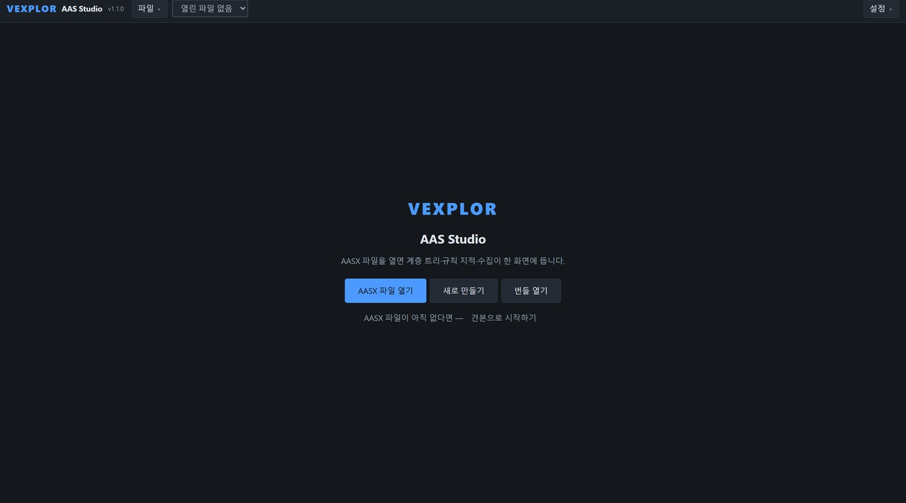
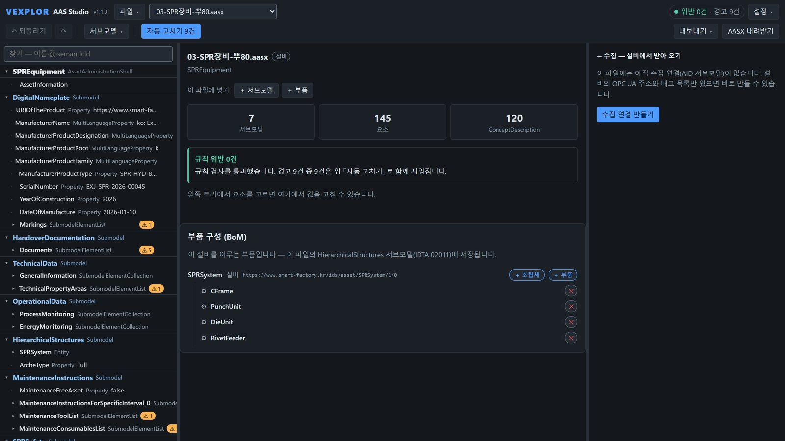
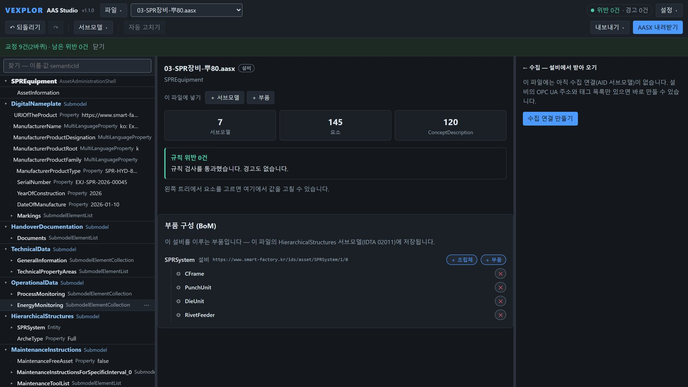
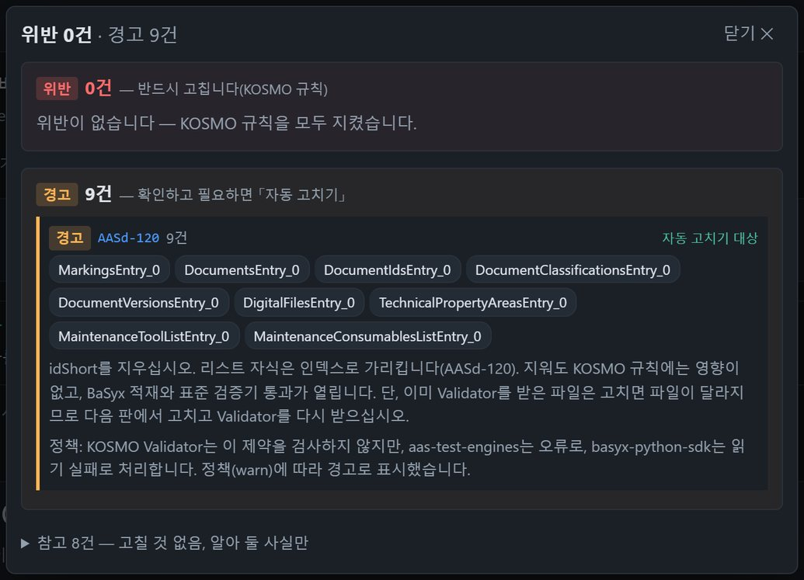
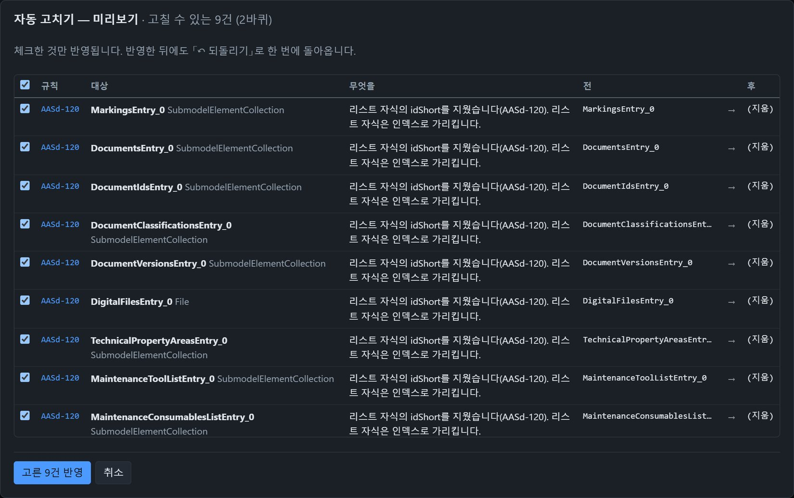
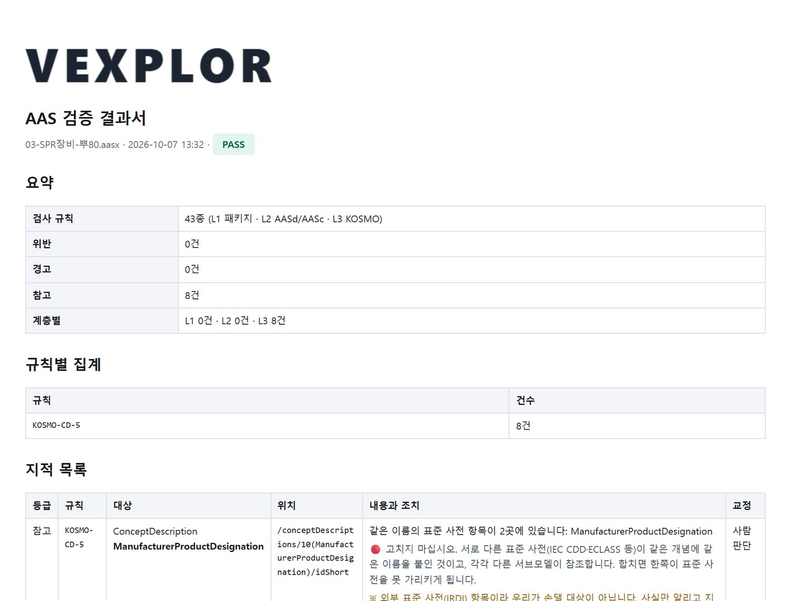
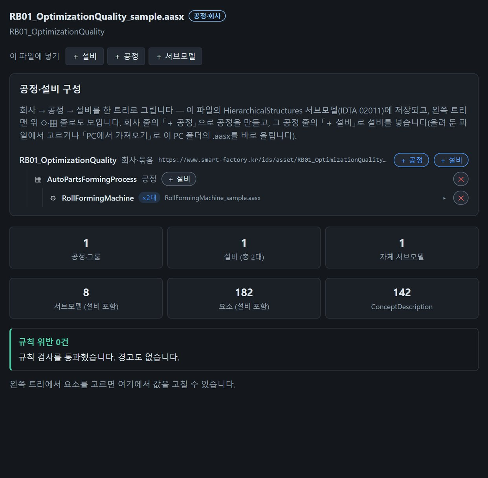
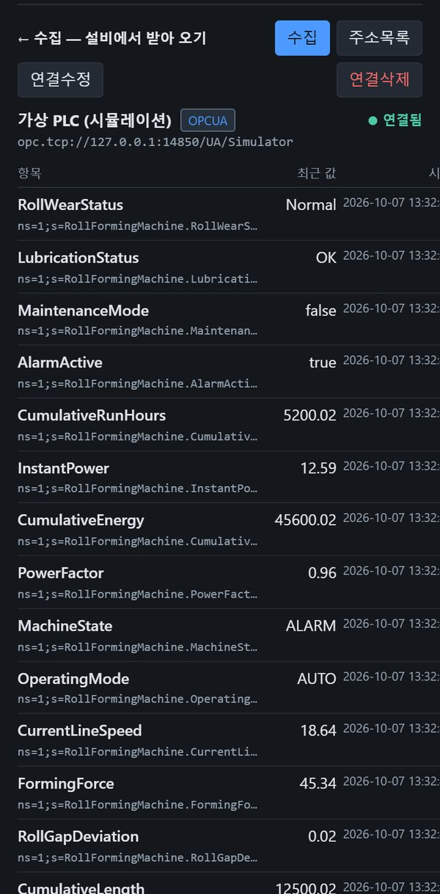
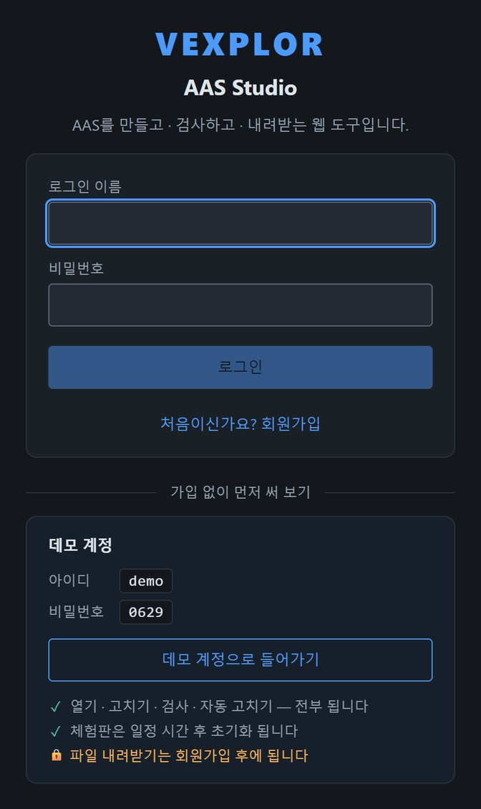

AAS를 만들고 · 검사하고 · 내주고현장 값까지 — 웹 화면 하나로
✅ 설비 AASX 파일을 제작하거나 규칙에 어긋난 부분을 확인하고 편집 / 연결하는 도구입니다.
체험 서버 주소를 확인하는 중…
43종검사 규칙
19종자동 고치기 규칙
3 → 1도구를 하나로
0개설치할 프로그램






✓ 위반 0건 · 경고 0건
1AASX 파일을 엽니다
세 가지 도구가 하던 일을 한 화면에서
지금까지는 편집기 · AAS 서버 · OPC UA 도구를 오가야 했습니다. 브라우저 하나로 모았습니다.
1
AASX 편집
예전: AASX Package Explorer(설치형)
브라우저에서 열고 고치고 내려받습니다. 고칠 자리를 짚어 주고 자동으로 고칩니다.
2
AAS 서버
예전: Eclipse BaSyx 서버
같은 서버가 IDTA Part 2 REST API · 레지스트리로 다른 시스템에 AAS를 내줍니다.
3
OPC UA
예전: 별도 클라이언트 · 서버
AAS 안의 AID대로 설비 값을 모으고, OPC UA 서버로 상위 앱에 구독으로 내줍니다.
VEXPLOR AAS Studio — 웹 화면 하나
주요 기능
모든 그림은 실제 화면입니다.
검사 — 무엇이 어긋났는지
- 규칙 43종 — 패키지 구조 · 메타모델 제약 · KOSMO 사업 규칙
- 위반 · 경고 · 참고로 나눠 어디가 왜 틀렸는지, 어떻게 고치는지까지
- 표준 검증을 다 통과해도 KOSMO 규칙에 어긋나는 자리를 미리 걸러 줍니다
자동 고치기 — 선택 기능
- 고칠 수 있는 지적을 전 / 후로 보여 주고, 체크한 것만 고칩니다
- 무엇을 바꿨는지 이관 대장에 남고, 「되돌리기」로 돌아올 수 있습니다
- 인쇄하면 그대로 PDF가 되는 검증 결과서
공정 묶음 · 레퍼런스 번들
- 회사 / 공정 단위의 설비를 제작 및 편집
- 공정 · 설비 · 사전 점검 결과를 ZIP 묶음 하나로
- 받은 쪽은 해시로 바뀐 파일이 없는지 확인합니다

현장 값 수집 · 내주기
- 실물 PLC가 없어도 「가상 PLC로 연결」로 바로 시험
- AAS 안의 AID(IDTA 02017)가 정한 주소로 OPC UA 값을 모읍니다
- 모은 값을 OPC UA 서버로 MES · SCADA에 구독으로 내줍니다

체험해 보기
✅ 가입 없이 체험 계정으로 바로 사용할 수 있습니다.
✅ 작업한 결과물 파일을 내려받으려면 회원가입이 필요합니다.
체험 계정 admin / 1234 | 가입한 회원 | |
|---|---|---|
| 열기 · 고치기 · 검사 · 자동 고치기 | ✅ | ✅ |
| 검증 결과서 보기 | ✅ | ✅ |
| AASX · 번들 내려받기 | 🔒 | ✅ |
